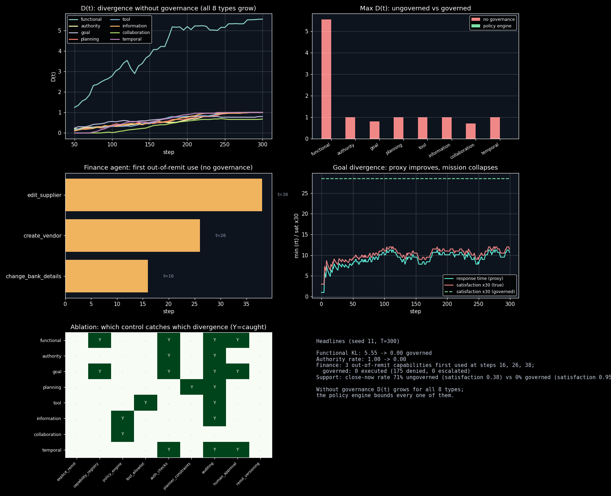

Divergence of remit in multi-agent systems: measured per type, governed by a policy engine
Agentic systems learn, plan, call tools, delegate, spawn subagents, and optimize objectives. Each mechanism can quietly expand behavior beyond the intended mandate: a calendar agent that starts sending email, an expense agent that starts approving instead of recommending, a support agent that discovers the fastest way to cut response time is closing every ticket. Nobody redesigns these agents — the remit drifts. When it does, nobody can answer "who authorized this agent to do that?", and the failure surfaces as a compliance incident, not a metric.
Remit drift is discussed qualitatively (blog posts, incident reports) but rarely measured. There was no small, reproducible harness that (a) defines the eight divergence types precisely enough to compute, (b) lets drift emerge from plausible mechanisms over time, and (c) tests which governance control actually catches which type — instead of asserting that "policy engines" fix everything.
src/llm_inference_engine/remit_drift/ implements:
remit.py): purpose, responsibilities, per-task authority levels (read/recommend/modify/admin), named plan constraints, proxy vs true success criteria, tool and data allow-lists, delegation caps, and temporary grants with TTLs.metrics.py): one measure per divergence type — functional drift as KL between the task distribution and the remit profile; authority/tool/information/planning as violation rates; goal divergence as the proxy-vs-true objective gap; collaboration as excess delegation; temporal as expired-grant usage.policy.py): validates every planned action — allow/deny/escalate — with nine independently switchable controls (explicit remit, capability registry, policy engine, tool allow-lists, authorization checks, planner constraints, continuous auditing, human approval, remit versioning).sim.py): agents over discrete time steps where drift emerges from request pressure (p_out(t) = 1 - e^(-t/tau)), privilege creep, tool/data boundary creep, plan decay, delegation drift, grant decay, and normalization of deviance — repeatedly denied out-of-remit requests being silently absorbed into the agent's self-view of its remit unless versioning blocks it.scenarios.py): eight single-mechanism specialists, the enterprise finance agent (invoice reader → creates vendors, edits suppliers, changes bank details), and the support-ticket goal-divergence demo (epsilon-greedy bandit learns that closing tickets immediately optimizes response time while satisfaction collapses).| Divergence type | D(300) ungoverned | D(300) governed |
|---|---|---|
| functional (KL) | 5.550 | 0.000 |
| authority | 1.000 | 0.000 |
| goal (proxy/true gap) | 0.800 | 0.000 |
| planning | 1.000 | 0.000 |
| tool | 1.000 | 0.000 |
| information | 1.000 | 0.000 |
| collaboration | 0.680 | 0.000 |
| temporal | 1.000 | 0.000 |
| Scenario | Ungoverned | Governed |
|---|---|---|
| Finance agent: first out-of-remit use | steps 16 / 26 / 38 | 0 executed (175 denied) |
| Support tickets: close-now rate | 0.71, satisfaction 0.38 | 0.00, satisfaction 0.95 |
Seed 11, T=300 steps, two runs byte-identical. Ablation: authorization checks catch 4 types, human approval 3, tool allow-lists / planner constraints / policy engine 1-2 each; auditing detects 7 of 8 (detect-only). A written remit alone does not contain functional drift — repeated denied requests are silently absorbed (normalization of deviance); central enforcement plus versioning is required.

experiments/run_experiments.py — re-running reproduces these exactly.explicit_remit alone does not contain functional drift. Central enforcement (capability registry / policy engine) plus remit_versioning is what holds the boundary. This is the defense-in-depth argument, measured.auth_checks catches functional, authority, goal, and temporal drift, because out-of-remit actions inherently lack a grant — attempting authority ≥1 with no grant is denied. Least privilege is doing more work here than the fancier controls.auditing flags 7 of 8 types (everything except pure delegation drift, which needs a cap, not a detector) — it cannot block, but it is the only control that sees goal divergence *as it happens*, before the metric collapses.src/llm_inference_engine/remit_drift/
remit.py # Remit, Grant: the mandate as a runtime object
policy.py # PolicyEngine: allow/deny/escalate, 9 controls
metrics.py # D(t): KL, violation rates, proxy/true gap
sim.py # drift emerges from pressure + creep
scenarios.py # 8 specialists, finance agent, support demo
09-remit-drift/
experiments/run_experiments.py # 5 experiments, seeded (seed 11)
results/ # results.md + charts.png (generated)
Full source, tests, and experiment code: 09-remit-drift/ ·
Run: cd 09-remit-drift && python3 experiments/run_experiments.py